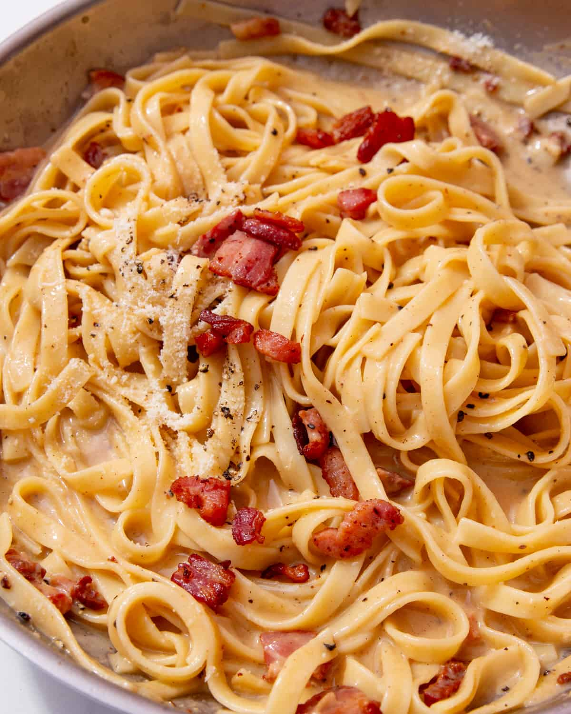

Tagliatelle Carbonara

A step by step guide to the perfect Tagliatelle Carbonara.
Ingredients
- 4 egg yolks
- 175ml single cream
- 2/3 cup (85g) of parmigiano reggiano
- black pepper
- 75g good pancetta
- 400g of fresh Tagliatelle
Method
- Crack the egg yolks into a bowl, add the cream, finely grate in the Parmigiano Reggiano and season with freshly cracked black pepper, then mix well. If you can, use chilled eggs here: cold yolks are easier to separate from the white. Crack the egg yolks into a bowl, add the cream, finely grate in the Parmigiano Reggiano and season with freshly cracked black pepper, then mix well. If you can, use chilled eggs here: cold yolks are easier to separate from the white.
- Add the pancetta to a large frying pan and sauté over medium-low heat until browned and crisp, around 5 minutes.
- Cook your homemade tagliatelle in a large pan of generously salted boiling water for 3-4 minutes, or until ‘al dente’ (taste a piece before removing from the water).
- Once cooked, reserve 1/2 a cup of the boiling cooking water, and transfer the pasta to the frying pan with the pancetta. Toss well and then immediately remove the pan from heat - this is crucial as to ensure the eggs do not scramble when introduced.
- Now add the egg, cream and cheese mixture, tossing vigorously to ensure the sauce clings to the pasta and doesn’t settle on the base of the pan. Add the pasta water, adjusting as necessary to obtain a silky smooth sauce that completely coats the pasta. Continue to toss vigorously and stir through with a large pair of tongs.
- Finish with freshly grated Parmigiano Reggiano and a healthy grind of black pepper. Serve immediately, and enjoy!
Home